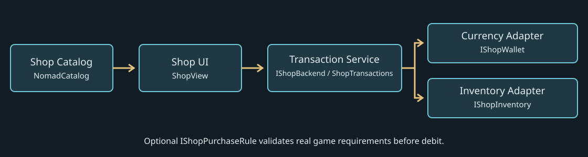

Dependency-aware import and package setup — RC.4
INTEGRATION — currency, inventory and modal ownership
Choose one backend boundary
ShopView depends on IShopBackend. Either implement that interface over your existing authoritative transaction service, or construct new ShopTransactions(wallet, inventory, optionalRules). The latter implements IShopBackend. Do not run two economy services over the same funds. Use one service per customer/shared wallet+inventory; pass it to multiple merchant views. Distinct catalog IDs separate per-merchant purchase history; item IDs identify inventory units across catalogs.

| Interface/member | Contract |
|---|---|
| IShopBackend.Balance / Owned(ShopItem) | Current integer balance / actual delivered units. |
| Validate(NomadCatalog, ShopItem) | Return ShopResult(Success, Code) without delivering or debiting. |
| Purchase(NomadCatalog, ShopItem, string requestID) | Execute one intended purchase and return result. |
| Equip(ShopItem) | Your equipment integration; success is meaningful only if your adapter actually equips it. |
| IShopWallet.CurrencyID / Balance | Exact currency key and real nonnegative spendable balance. |
| TryDebit(int amount) / Refund(int amount) | Atomic debit, no mutation on failure; reliable inverse refund. |
| IShopInventory.Count(string id) / CanAdd(ShopItem) | Actual unit count / side-effect-free capacity check. |
| Capture() / Restore(object snapshot) | Snapshot all state TryAdd can modify; restore partial delivery completely. Return a nonnull snapshot. |
| TryAdd(ShopItem) | Add exactly item.Quantity units, or report false. Core verifies the count change. |
| TryEquip(ShopItem) | Apply your game's equipment operation. Core checks Equippable and ownership first. |
| IShopPurchaseRule.Validate(catalog,item) | Optional player requirements; inspect real unlock/level/progression data and return success/code. |
These are synchronous local main-thread interfaces, not async network calls. ShopResult is a readonly struct with bool Success and string Code. Codes include ready, unavailable, invalid, locked, owned, soldout, full, funds, duplicate, purchased, rollback, equipped. ShopView.Message converts known codes to UI text; custom codes fall back to UNAVAILABLE unless you extend that presentation.
Transaction sequence and failure boundaries
Purchase rejects reentrancy, empty request IDs and previously successful IDs. Validate checks that the item is the actual object returned by catalog.Find(ID), Available, stock, positive price/quantity, matching currency, optional rules, per-service delivery limits, capacity and funds. Pass catalog.Find(id), not an unrelated copy with the same ID.
Core captures inventory and pre-debit counts/balance, debits, verifies exact balance reduction, delivers, and verifies Count increased by Quantity. Only then it increments per-catalog/item successful-delivery history and records the request ID. Failed delivery triggers Restore then Refund, returning rollback. Adapters must not throw during Restore/Refund, perform irreversible gameplay effects, save halfway, or return false after mutating the wallet. Core cannot repair a broken adapter's external side effects. Equip is a separate operation and does not have a purchase snapshot/rollback wrapper.
The UI generates a new request ID per intentional click. Retry the same operation with its original ID; use a new ID for another intended purchase. Only successful IDs are remembered for this service lifetime. Failed requests can be retried. Closing/reopening a view does not reset history if the same service is retained. Reconstructing ShopTransactions resets history and deduplication; this is not durable or cross-process idempotency. There is no public history import/export API in this candidate. For persistent stock, account limits or online authority, implement IShopBackend over your durable transactional store instead of claiming wallet-only saving persists all limits.
Stock is a delivery limit, not a global mutable merchant stock shared between service instances. MaxPurchases counts deliveries, not units. Catalog assets are definitions: never decrement their Stock to fake per-player persistence. Save wallet, inventory, stock/history and committed request IDs as one coherent state after confirmed success. Core does not serialize saves, reserve remote funds, reconcile crashes or provide server authority.
Wire the example and an interaction
In a separate test scene add an empty Customer object with CustomerStore and CustomerShopHost. Assign the store component and a valid catalog to the host; match store.currencyID with catalog.CurrencyID. Add exactly one EventSystem with InputSystemUIInputModule and configured UI actions (GameObject > UI > Event System; replace a legacy StandaloneInputModule if your project uses only the new Input System). Provide a main camera for your world. Core creates its own canvas/viewer, not an EventSystem; NomadDemo's automatic setup is demo-only.
Create a normal Unity UI Button, add an OnClick listener targeting CustomerShopHost.Open. After Start, click it in Play: shop opens and BUY ITEM uses the teaching adapter. The shop's Close button calls host.Close via CloseRequested. Your NPC interaction action can call the same Open after checking player identity, range, line of sight and merchant availability. The host intentionally does not invent a universal interaction key or NPC detector. With asmdefs, your host assembly must reference Nomad.Shop.Runtime and any Unity modules your code uses; the examples do not require the demo assembly.
Input boundary: connect onOpened/onClosed to your game's existing modal owner, not directly to an unconditional EnableAllControls pair. That owner must capture the prior movement, fire, ability, interaction, reticle, cursor and action-map state; suspend only gameplay actions while retaining UI Point/Click/Scroll; restore the captured state on close/death/unload. For example an already paused controller must remain paused. Do not disable the UI action map or pause the InputSystem entirely. This sample handles only its own cursor and emits events; without listeners it does not block a character. The included demo similarly handles cursor and ESC/F, not production gameplay input. Avoid mixing NomadDemo and this host in one scene as competing shop owners.
The sample creates one service in Start. For several merchants, refactor service ownership into your existing per-player session manager and inject that same backend into their views; do not create one CustomerShopHost service for each merchant sharing this store. Close before final destruction; destroy the view at scene teardown so its preview scene unloads. A custom owner must also handle player death, merchant removal, interrupted interactions and disabled objects.
Live API use and limits
ShopView.Create(parent, optionalFont) builds UI. Set Language before Open, assign CloseRequested, then Open(catalog, backend). Use SetLanguage("cs") while visible to rebuild translated labels, SelectCategory(categoryID) before SelectItem(itemID), and Close() to release preview resources. Visible, Selected, CategoryID and Preview expose the current state. BuyButton, EquipButton, CloseButton, ResetButton, LanguageButton, CategoryButtons and ItemButtons are runtime controls, not serialized scene-prefab customization slots.
Data-only GameplayItem, EquipmentSlot, Rarity, Requirements and Level do not implement your weapon, armor, ability or progression system. Set Available only when your adapter supports delivery. Rules are evaluated before debit; if a rule provider is present, it must enforce all required unlock logic itself. A nonempty UnlockID with no provider returns locked. Never treat preview success as proof of gameplay integration.